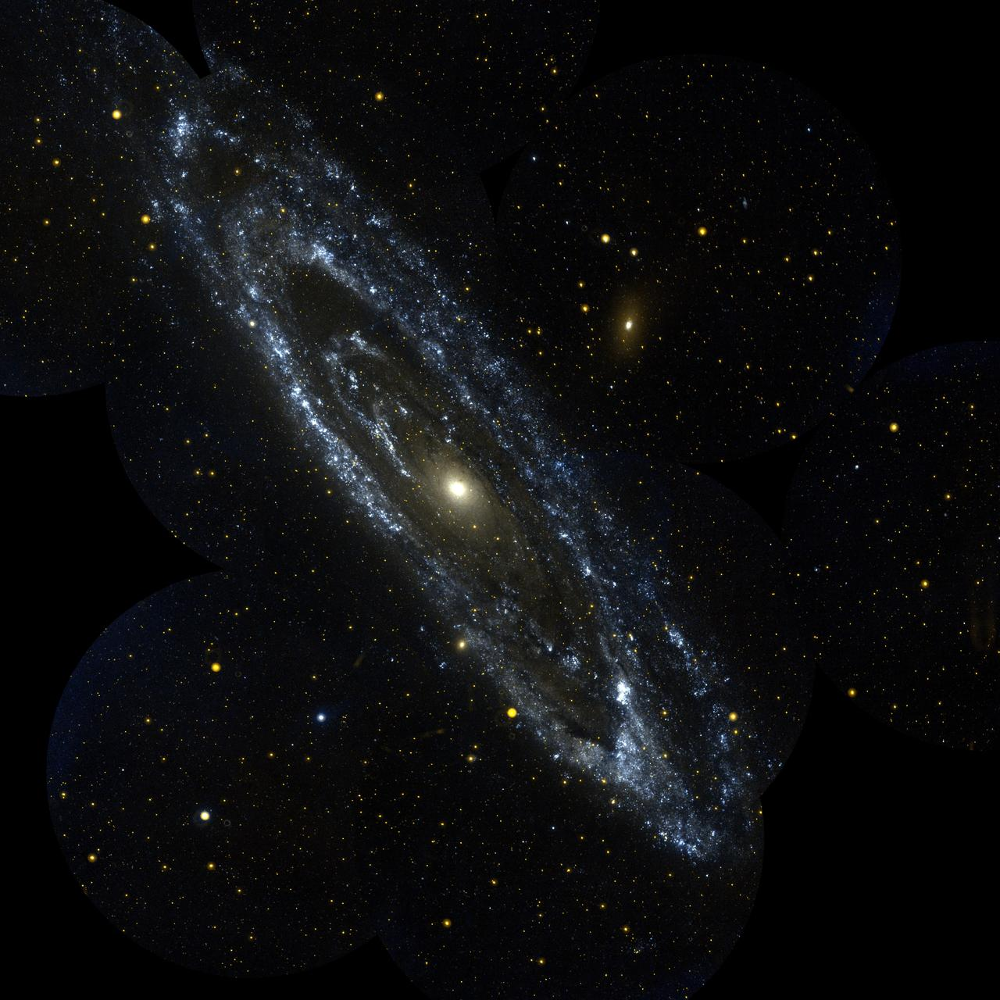
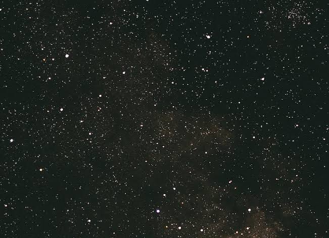

المجرات هي تجمعات ضخمة تحتوي على النجوم والغازات والغبار الكوني، وترتبط معًا بفعل الجاذبية.

النجوم كرات ضخمة من الغازات الساخنة، تنتج الضوء والحرارة، والشمس أقرب نجم إلى الأرض.
• مجرتنا تسمى درب التبانة.
• الشمس نجم من نجوم الكون.
• توجد مليارات المجرات في الكون.
• تختلف النجوم في أحجامها وألوانها.